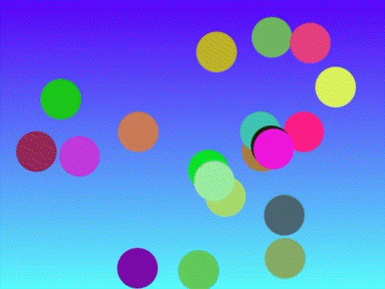

Bienvenue dans BASISTIC ! Lorsque vous vous trouvez sur la page "Home" de l'interpréteur vous devriez vous retrouver avec l'interface suivante :
Interface de l'interpréteur BASISTIC™
Dans l'éditeur, entrez le text suivant : main { } . Vous venez de créer la boucle principale qui contiendra toutes les instructions de votre code.
Maintenant, entre les deux accolades, entrez le texte suivant : DRAWCIRCLE(200, 220, 50, 0, "lightblue" ,1); .
Cette ligne de code signifie que vous allez dessiner un cercle dont le centre sera à 200 pixels du bord gauche et 220 pixels du bord haut.
Ce cercle aura un rayon de 50 pixels, une orientation de 0°, une couleur "lightblue" et la forme sera pleine. Si vous avez saisi cette ligne de code correctement, vous allez voir un cercle bleu apparaître dans
l'interface graphique après avoir cliqué sur le bouton "run".
Si vous ne l'avez pas saisi correctement, une erreur devrait apparaître dans la console. Si cela arrive, vérifiez que vous avez parfaitement recopié l'exemple : les nombres devraient être compris entre deux parenthèses et avoir une virgule entre chacun d'entre eux. Il faut être très rigoureux vis-à-vis de la syntaxe, une simple erreur de ponctuation peut empêcher le bon fonctionnement du programme.
Passons maintenant à un exemple plus intéressant. Un code en BASISTIC™ se décompose en plusieurs parties. La boucle main qui s'exécute une fois lorsque l'on presse le bouton Run, et la boucle update, qui s'exécute dès lors que la boucle main est finie et ce jusqu'à ce que l'on presse le bouton Stop. A cela peut s'ajouter différents sous-programmes identifiés par des labels. Dans l'exemple qui suit, nous nous concentrerons sur l'utilisation de la boucle update, pour en savoir plus sur l'utilisation des labels veuillez vous référer à l'onglet "label" de la documentation.
Supprimez ce que vous avez écrit précedement dans la zone de texte et essayez le programme suivant :
main {
let phase = 0;
}
update {
DRAWCLEAR("all");
FOR i = 0 TO 10
radians = ((phase + i * 36) / 180) * 3.1415;
y = 360/2 + 80 * SIN(radians);
DRAWCIRCLE(i * 48 + 24, y, 20, 0, "lightblue" ,1);
FEND;
phase = (phase + 8) % 360;
}
Les détails de l'implémentation du code ne seront pas expliqués sur cette page mais vous pourrez retrouver tous les détails du fonctionnement dans la documentation. Pour l'instant, essayer simplement de lancer l'exécution du code. Vous devriez obtenir le résultat suivant :
Dix cercles bleu oscillant de manière sinusoïdale
Vous pouvez trouver un bouton "Parcourir", sous la zone de texte. Ce dernier vous permet de choisir un fichier à importer directement dans la zone de texte puis de l'exécuter. Nous avons mis plusieurs fichiers contenant des exemples de programmes utilisant BASISTIC™ à votre disposition pour essayer cette fonctionnalité.
La prochaine fonctionnalité est importante, il s'agit du bouton "Save". Vous le trouverez sur la droite du bouton "Parcourir". C'est toujours un bonne idée de sauvegarder votre progression régulièrement. Au fur et à mesure que vous avancer dans votre code, sauvegarder vos différentes version afin de pouvoir garder une trace de votre avancement.
Lorsque vous utilisez la boucle update, sauf indication contraire, l'interprétation ne s'arrêtera pas d'elle même. Il vous faudra alors appuyer sur le bouton "Stop" dès que vous souhaiterez interrompre l'interprétation.
Apprendre à programmer en BASISTIC™ implique beaucoup d'exploration et de tentatives pas forcément concluantes. C'est pourquoi, BASISTIC™ inclu des dizaines d'exemples qui démontrent différentes fonctionnalités de l'interpréteur. Pour récupérer un exemple, il suffit de [...]. Les exemples sont regroupés en catégories : [...]. Choisissez simplement une catégorie qui vous intérèsse et essayez un de nos exemples.
En plus des exemples, nous mettons également à votre disposition la documentation complète de BASISTIC™. Vous pouvez y accéder en cliquant sur l'onglet documentation du menu. Vous trouverez alors la liste de toutes les fonctions déjà implémentées dans BASISTIC™. Ces élements sont eux aussi rangés par catégories pour plus de facilité. Il suffit de cliquer sur la catégorie qui vous intéresse pour accéder à tous les élements, accompagnés de descriptions et d'exemples d'utilisations (beaucoup plus simples et plus courts que ceux présents sur cette page).
Nous espérons que ces explications vous auront été utiles. Merci d'avoir choisi BASISTIC™.